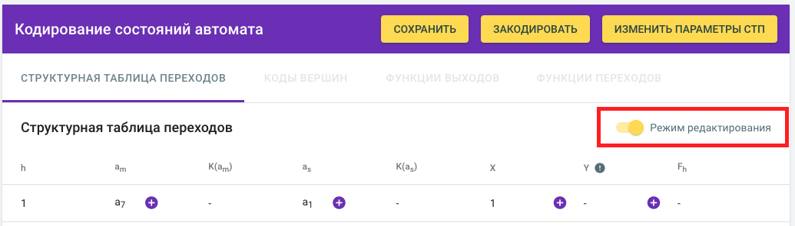
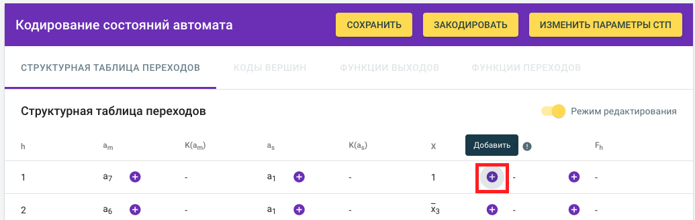
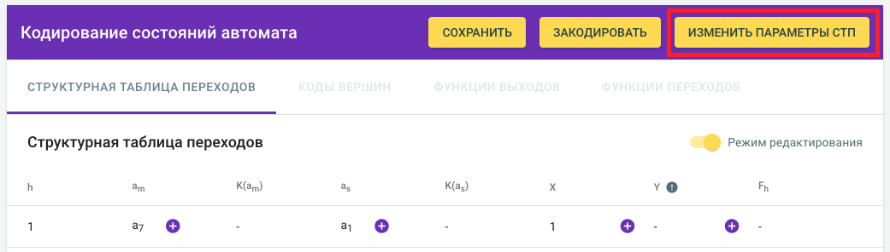
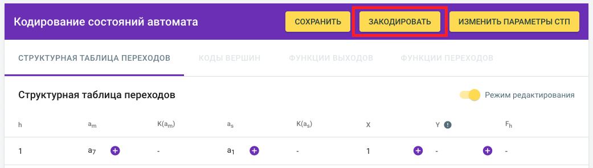
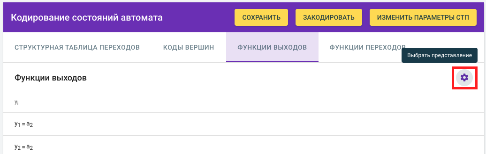
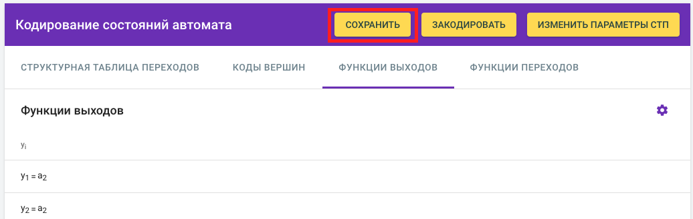

При запуске программы появляется окно, в котором предлагается ввести информацию о типе автомата (Мили или Мура), длину СТП (число строк структурной таблицы переходов), число Х (число входных сигналов), число Y (число выходных (управляющих) сигналов). После ввода данной информации, нажмите кнопку «Создать», если хотите продолжить.
Далее вы видите заготовку таблицы, в которой должен быть включен режим редактирования (переключатель желтого цвета справа). При необходимости режим редактирования может быть отключен. 
Нажимая на «+» в каждой позиции таблицы, вы можете вводить информацию при помощи мыши из выпадающего списка значений (если можно вводить несколько значений в одной позиции, появятся check boxes). 
Если необходимо изменить параметры таблицы, нажмите желтую кнопку справа вверху «Изменить параметры СТП». Введите нужные изменения. 
При вводе таблицы можно использовать как прямую структурную таблицу, так и обратную.
Внимание! В таблице автомата Мура выходной сигнал (y) необходимо ставить в соответствие состоянию из столбца as, т.е. столбец Y следует заполнять по столбцу as. Триггер с младшим индексом (D1) соответствует младшему разряду в коде состояния.
После заполнения таблицы нажмите желтую кнопку справа вверху «Закодировать». 
Выберите способ кодирования (все способы предлагаются для D-триггеров).
После этого этапа становятся активными закладки «Коды вершин», «Функции выходов» и «Функции переходов».
В закладке «Коды вершин» отображается упорядоченный список состояний автомата с соответствующими им кодами.
В закладках «Функции выходов» и «Функции переходов» отображаются уравнения функций выходных сигналов и уравнения функций возбуждения триггеров соответственно.
Уравнения могут быть отображены как в базисе Буля, так и в базисе Шеффера – это регулируется по значку шестеренки справа. 
Если на данном этапе необходимо поменять кодирование состояний, нажмите кнопку «Закодировать».
Если на данном этапе необходимо внести другие изменения в таблицу, нажмите кнопку «Изменить параметры СТП», а затем снова закодируйте состояния.
В конце для формирования отчета о проделанной работе в рамках программы, нажмите кнопку «Сохранить».

Программа предложит выбрать путь сохранения файла формата docx, в котором будут отображены: информация о типе автомата и способе кодирования состояний, СТП, уравнения функций выходных сигналов и уравнения функций возбуждения триггеров в базисах Буля и Шеффера.